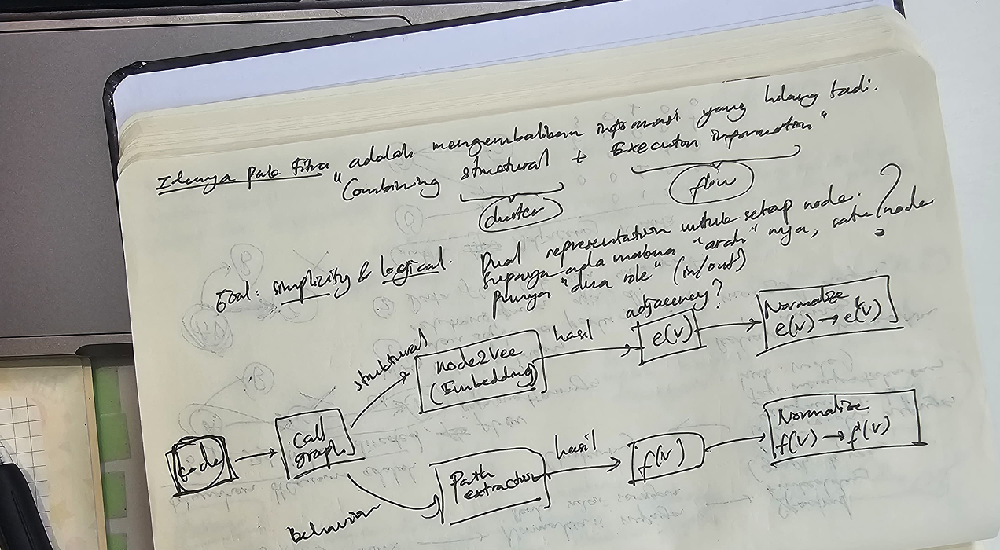
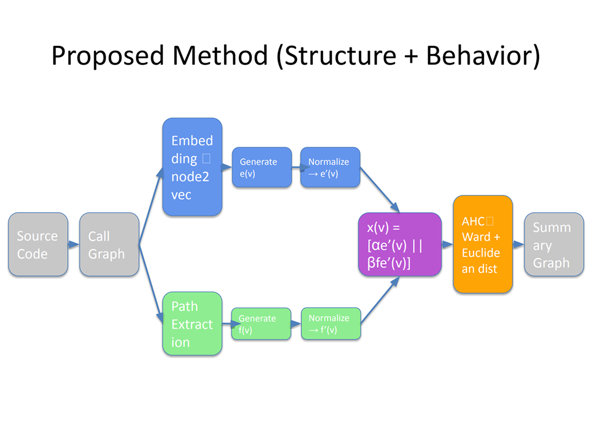
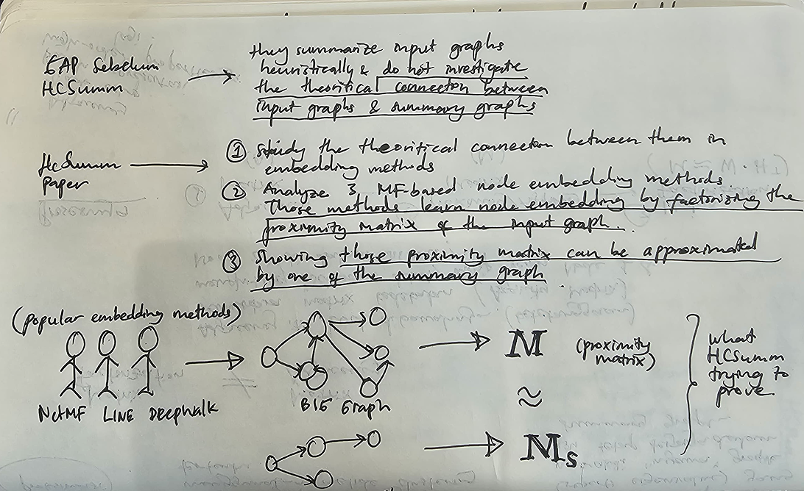
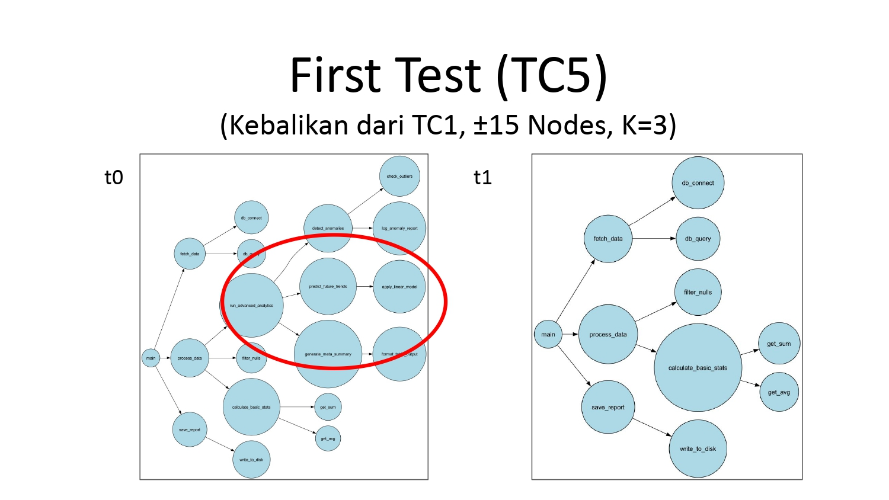
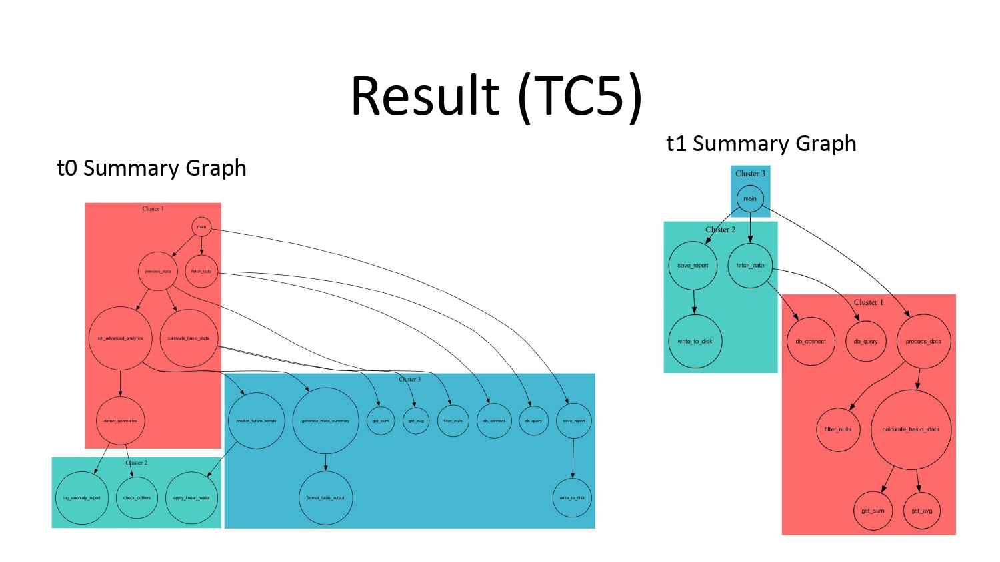
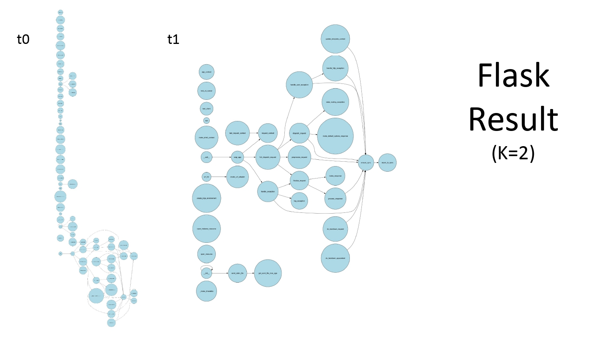
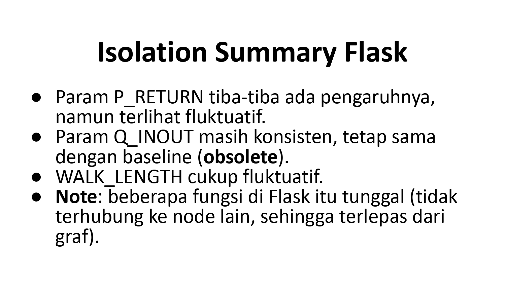
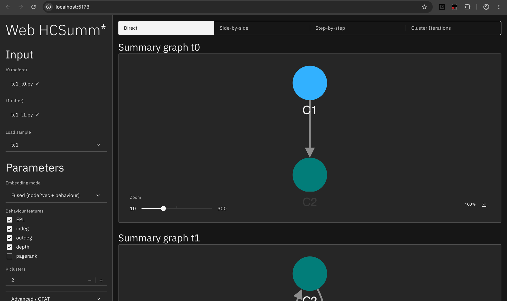

On Supporting A Research

Introduction
In real life, software systems grow relentlessly. The call graphs expand, complexity compounds, and developers slowly lose the big-picture view of how their systems actually behave. HCSumm* is a research project addressing this problem: summarizing large, evolving call graphs into clean, cluster-based representations that preserve structure without overwhelming the reader.

The existing HCSumm approach compresses graphs through spectral embedding and clustering, but in doing so, it strips away directionality—execution flow, the very thing that tells you how a system actually runs, gets lost. My professor's research proposes closing that gap: combining structural information (via node2vec) with behavioral information (via execution path features) into a dual representation for every node, then clustering with Ward linkage on the fused embedding.
As a research assistant, my role was to translate each iteration of the algorithm into something testable, and eventually, something presentable.
Learning

Before running a single test, I needed to understand what I was actually testing. That meant tracing through the full pipeline: how a call graph gets embedded via node2vec, how execution paths get extracted and normalized into feature vectors, how the two representations get fused (x(v) = [αe'(v) ‖ βf'(v)]), and how Euclidean distance on that fused vector feeds into Ward clustering.
I also had to understand why each step existed—why normalization mattered (to prevent one feature from dominating the other), and why the research needed multiple NPD (Network Portrait Divergence) variants to properly evaluate summarization quality, from the original structural NPD to execution-path-aware versions computed before and after clustering.
Testing
With the fundamentals in place, testing followed two tracks. First, dry-run verification—manually working through small synthetic graphs (a 4-node graph evolving into a 5-node graph across t0 and t1) to confirm the math held up end-to-end: embedding, normalization, fusion, distance computation, and Ward merges, all checked by hand before trusting the code. This was essential for validating Goal 1—that the proposed method behaved as expected.


Second, real-world validation. Every time my professor explored a new direction, I picked it up in Jupyter notebooks and tested it against real call graphs I sourced myself. Every run was documented and brought back to my professor, so findings could directly shape the next iteration.


Visualization
My teammate and I was assigned to built Web HCSumm*—a web application that packages the entire pipeline into an interactive interface, no notebook required.

The web app lets users upload t0 and t1 call graphs (as .py files), configure Node2Vec parameters (embedding dimension, walk length, walk count) and behavioral features (EPL, in-degree, out-degree, depth, PageRank) individually, and choose between three embedding modes—Node2Vec-only, Behaviour-only, or Fused. Results can be explored through three views: a Direct view showing final summary graphs and cluster membership, a Step-by-Step view walking through each pipeline stage, and a Cluster Iteration view visualizing the Ward clustering process itself. A side-by-side t0 vs. t1 comparison mode, with consistent cluster indexing, rounds out the experience—alongside a full NPD evaluation table summarizing all five divergence metrics. Built with React and Cytoscape.js on the frontend and FastAPI on the backend (reusing the existing notebook pipeline), it's still running locally and unreleased.
Takeaways
This project was a genuinely challenging but valuable learning experience. Beyond the technical side, it taught me a lot about time management—juggling coursework alongside a research project meant learning how to prioritize, stay consistent with testing and documentation, and communicate progress clearly even when my own schedule was tight. Looking back, it was a solid introduction to what research work actually looks like, and I'm glad I took it on.